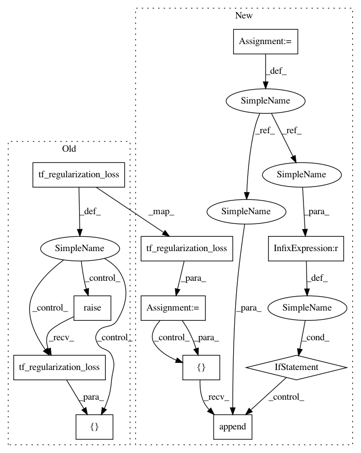

0e6f7cea4abae753c8e496bbbe6465af6818ad92,tensorforce/core/networks/layer.py,Conv2d,tf_regularization_loss,#Conv2d#,571
Before Change
return x
def tf_regularization_loss(self):
if super(Conv2d, self).tf_regularization_loss() is None:
losses = list()
else:
losses = [super(Conv2d, self).tf_regularization_loss()]
if self.l2_regularization > 0.0:
losses.append(self.l2_regularization * tf.nn.l2_loss(t=self.filters))
if self.bias is not None:
After Change
return x
def tf_regularization_loss(self):
regularization_loss = super(Conv2d, self).tf_regularization_loss()
if regularization_loss is None:
losses = list()
else:
losses = [regularization_loss]
if self.l2_regularization > 0.0:
losses.append(self.l2_regularization * tf.nn.l2_loss(t=self.filters))
if self.bias is not None:
losses.append(self.l2_regularization * tf.nn.l2_loss(t=self.bias))
if self.l1_regularization > 0.0:
losses.append(self.l1_regularization * tf.reduce_sum(input_tensor=tf.abs(x=self.filters)))
if self.bias is not None:
losses.append(self.l1_regularization * tf.reduce_sum(input_tensor=tf.abs(x=self.bias)))
regularization_loss = self.nonlinearity.regularization_loss()
if regularization_loss is not None:
losses.append(regularization_loss)
if len(losses) > 0:
return tf.add_n(inputs=losses)
else:
return None
In pattern: SUPERPATTERN
Frequency: 3
Non-data size: 11
Instances
Project Name: reinforceio/tensorforce
Commit Name: 0e6f7cea4abae753c8e496bbbe6465af6818ad92
Time: 2017-10-28
Author: aok25@cl.cam.ac.uk
File Name: tensorforce/core/networks/layer.py
Class Name: Conv2d
Method Name: tf_regularization_loss
Project Name: reinforceio/tensorforce
Commit Name: 0e6f7cea4abae753c8e496bbbe6465af6818ad92
Time: 2017-10-28
Author: aok25@cl.cam.ac.uk
File Name: tensorforce/core/networks/layer.py
Class Name: Dense
Method Name: tf_regularization_loss
Project Name: reinforceio/tensorforce
Commit Name: 0e6f7cea4abae753c8e496bbbe6465af6818ad92
Time: 2017-10-28
Author: aok25@cl.cam.ac.uk
File Name: tensorforce/core/networks/layer.py
Class Name: Conv1d
Method Name: tf_regularization_loss